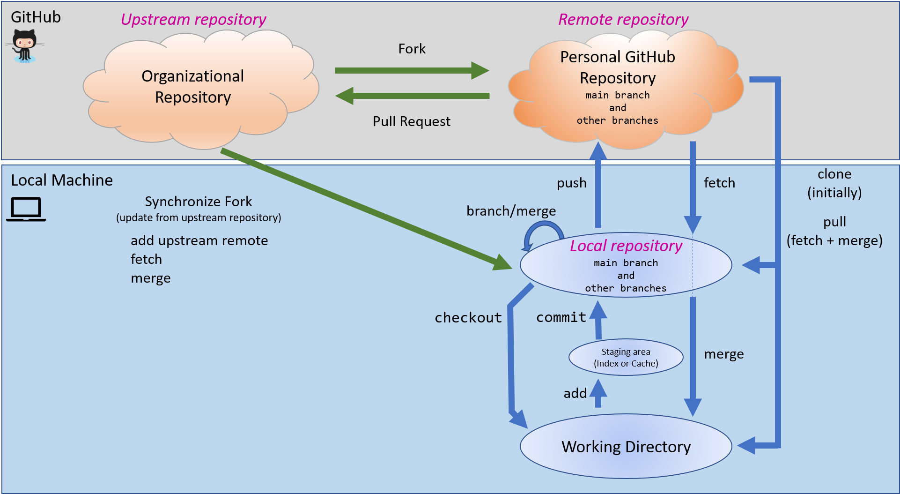

Git Introduction#
What is Git?#
Git is a free and open source distributed version control system for working on group projects. Originally designed for developers to work collaboratively on large software projects, Git has been repurposed by many scientific communities to manage the evolution of projects in a structured and reproducible way.
With Git, all files related to a project (images, documents, code, etc.) and their change histories are stored in a single repository. Repositories support a hierarchical directory structure, meaning folders and subfolders are allowed.
The power of Git comes from its distributed version control system (DVCS). Unlike local and centralized version control systems, in DVCSs users (clients - you) are able to fully mirror all files and folders in the project (repository) and see the project’s full history from all users. Think of DVCS as the Track Changes feature in Microsoft Word on steroids.
We are only going to use a few core commands in Git, but if you want to dive deeper into Git and DVCSs, there are many tutorials online, including videos, books, and external links on the Git website. The Getting Started and Git Basics chapters from the Pro Git book (free online) is also a good place to start.
Tip
If you do not want to use Git commands in a terminal, you can use GitHub Desktop. GitHub Desktop is a Graphical User Interface (GUI) that simplifies your Git workflows, and it installs the latest version of Git if you do not already have it installed.
Terminology#
The Git Glossary is the technical glossary of all Git terms and commands.
These are a few Git and GitHub terms you should be familiar with before starting.
Git - A type of version control system.
GitHub - An online hosting service for Git repositories.
Repository - Also called a “repo”. A repository is a permanent record of a project’s development. It tracks all changes made to files in a project over time. Initializing a repository for a project creates a .git folder that stores the project’s history. If you delete the .git folder, you delete the project’s record of development.
Clone (n.) / Cloning a repo (v.) - A clone of a repository is a complete (files and change histories) copy of a repository. You usually clone a repository from GitHub or another hosting service to your computer to work on project files locally.
Fork (n.) / Forking a repo (v.) - This is a special term used by GitHub and a few other hosting services. It is not a Git command. A fork is a cloned repository owned by someone else that you manage in your GitHub account.
Upstream repository - The repository you fork from.
Remote repository - A repository on GitHub or another hosting service.
Local repository - A repository on your computer.
Branch - Branches of a repository are isolated development areas. You create a branch to work on part of a project without affecting the entire project. Every repository has one default branch, usually called master, and can have multiple other branches. You merge branches using a pull request.
Checkout - “Checkout a branch” is to switch to a different branch in the repository.
Staging area - The staging area stores changes and additions for the next commit. The first time you add a file to the staging area allows Git to start tracking changes to that file. Staging is the step before committing a file, or changes to a file, to a repository. You can continue to edit files that have been staged.
Commit - Save all staged changes to your local repository.
Push - Move changes (commits) from your local repository to a remote repository.
Fetch - Retrieve changes from a remote repository without merging the changes into your local repository.
Merge - Incorporate the commits and files from a source repository to a target repository into a unified history. You can also merge branches within a repository.
Pull - Fetch and merge in one step.
Pull Request - Also called a “PR”. A pull request tells others about the changes you have made (all the commits) to the project. It is called a pull request because you are asking to pull the changes from a source to a target. You can create a pull request between branches of a single repository or between branches of different repositories.
